Print fallback · Methods · Biological range trace · manifest.json
| case | J1 | J2 | membership | J1 status | J2 status |
|---|---|---|---|---|---|
| span_j1_095_j2_095 | 95 | 95 | core_span_sweep | certified_primary | certified_primary |
| span_j1_095_j2_145 | 95 | 145 | core_span_sweep | certified_primary | certified_primary |
| span_j1_095_j2_175 | 95 | 175 | core_span_sweep | certified_primary | boundary_stress_only |
| span_j1_135_j2_135 | 135 | 135 | biological_refinement | certified_primary | certified_primary |
| span_j1_135_j2_145 | 135 | 145 | biological_refinement | certified_primary | certified_primary |
| span_j1_135_j2_150 | 135 | 150 | biological_refinement | certified_primary | certified_primary |
| span_j1_145_j2_095 | 145 | 95 | core_span_sweep | certified_primary | certified_primary |
| span_j1_145_j2_135 | 145 | 135 | biological_refinement | certified_primary | certified_primary |
| span_j1_145_j2_145 | 145 | 145 | core_span_sweep, biological_refinement | certified_primary | certified_primary |
| span_j1_145_j2_150 | 145 | 150 | biological_refinement | certified_primary | certified_primary |
| span_j1_145_j2_175 | 145 | 175 | core_span_sweep | certified_primary | boundary_stress_only |
| span_j1_150_j2_135 | 150 | 135 | biological_refinement | certified_primary | certified_primary |
| span_j1_150_j2_145 | 150 | 145 | biological_refinement | certified_primary | certified_primary |
| span_j1_150_j2_150 | 150 | 150 | biological_refinement | certified_primary | certified_primary |
| span_j1_175_j2_095 | 175 | 95 | core_span_sweep | boundary_stress_only | certified_primary |
| span_j1_175_j2_145 | 175 | 145 | core_span_sweep | boundary_stress_only | certified_primary |
| span_j1_175_j2_175 | 175 | 175 | core_span_sweep | boundary_stress_only | boundary_stress_only |
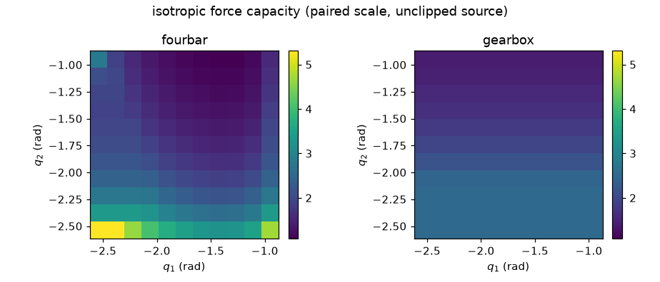
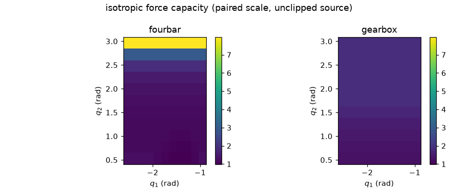
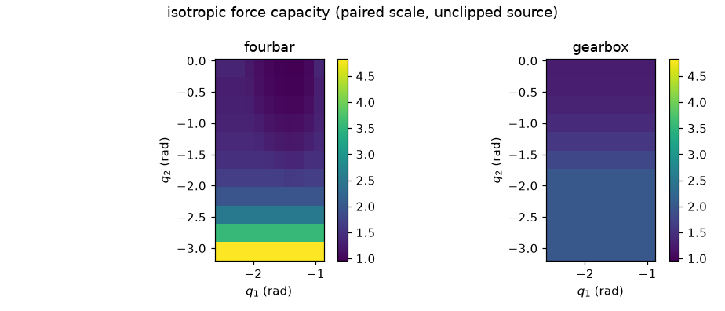
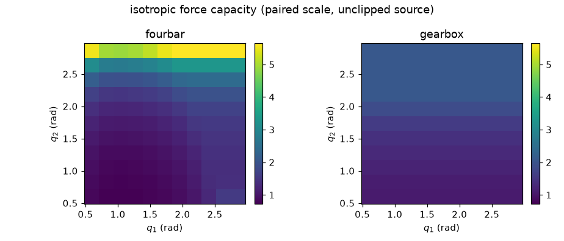
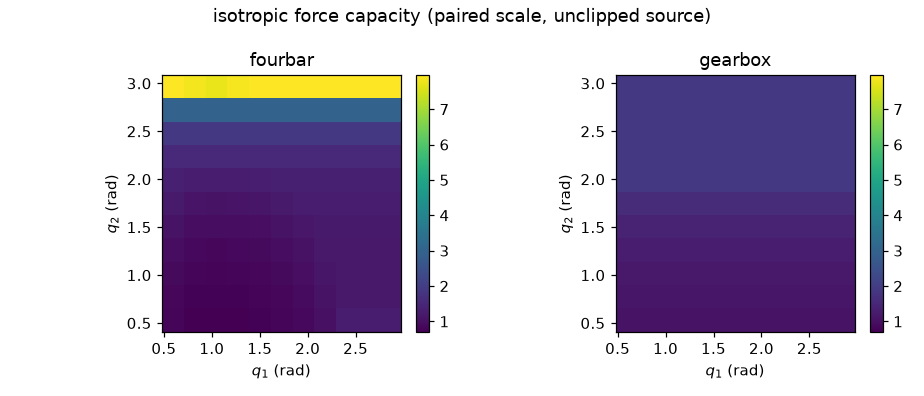
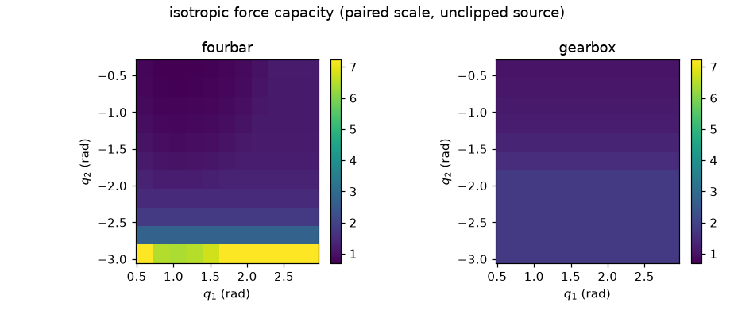
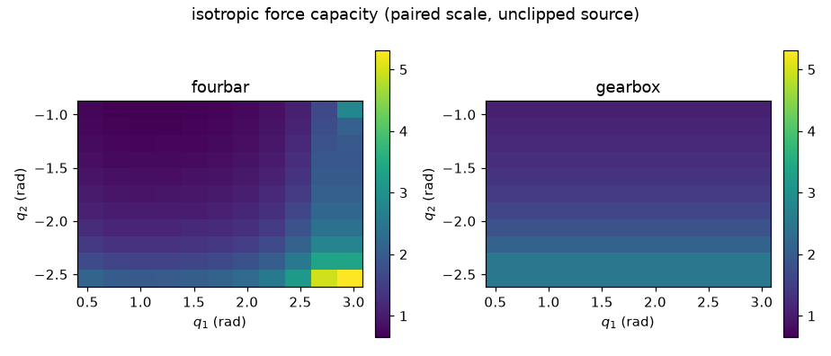
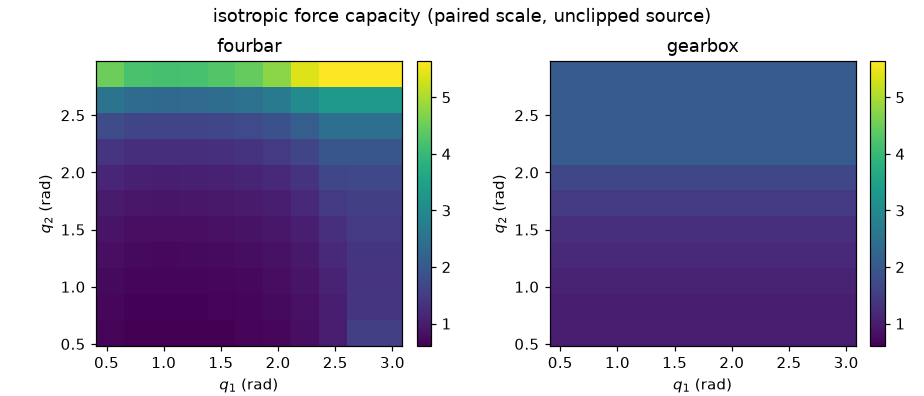
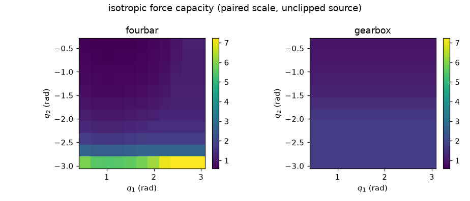

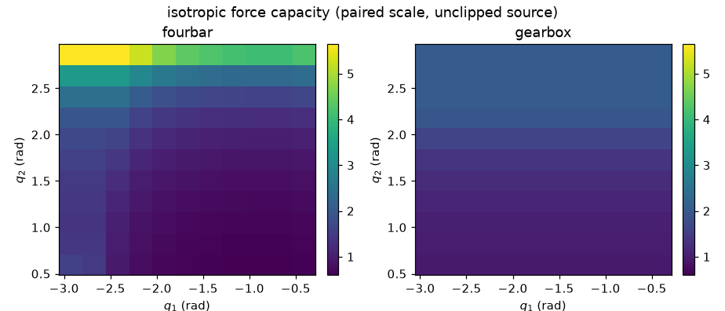

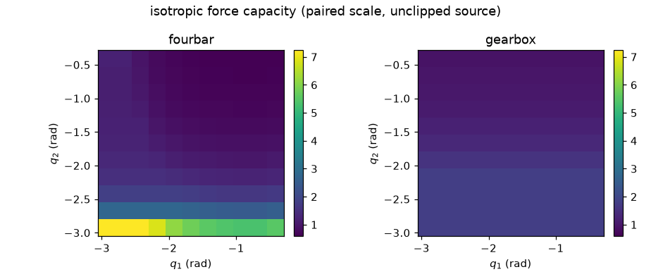
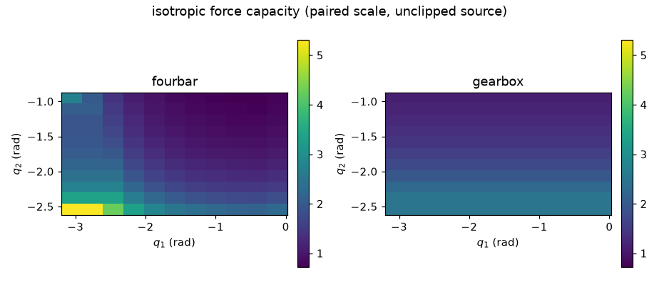
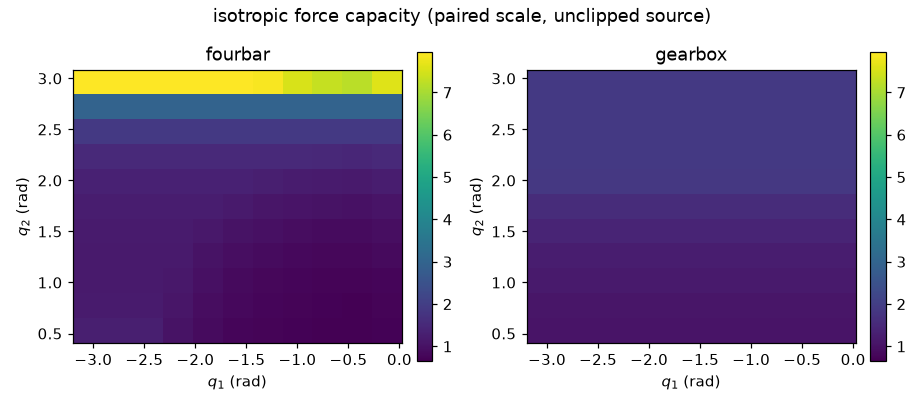
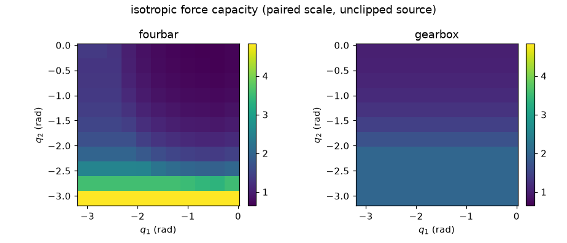